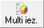

Uzņēmumu komisija¶
Uzņēmuma komisijas atskaite parāda informāciju par uzņēmuma komisijām, atbilstoši datu atlases filtrā norādītajiem kritērijiem.
 Pirms Uzņēmumu komisijas atskaišu
sagatavošanas, jāpalaiž Komisijas aprēķina rīks.
Pirms Uzņēmumu komisijas atskaišu
sagatavošanas, jāpalaiž Komisijas aprēķina rīks.
Atskaiti iespējams sagatavot detalizēti par katru no partneriem, atlasīt datus pēc apdrošināšanas veida, numura vai summas. Atskaitē iespējams atlasīt datus: - par norādīto laika periodu; - par konkrētu partneri; - pēc to summas, valūtas.
Filtrs jāaizpilda, lai sagatavotu atskaiti.
Dati uz ekrāna tiek parādīti atbilstoši norādītajiem datu atlases kritērijiem filtra ekrāna formā. Filtru var uzlikt, lai ierobežotu kādu datu parādīšanu uz ekrāna, iegūstot nepieciešamās izdrukas, vai arī ātrāk sameklētu nepieciešamos datus. Filtrs tiek izmantots arī atskaišu sagatavošanā un atsevišķu dokumentu satura aizpildīšanā.
Datu atlases kritērijus var saglabāt (  ).
Izvēloties izveidoto filtra sagatavi (
).
Izvēloties izveidoto filtra sagatavi (  ),
filtrs tiek automatizēti aizpildīts no filtra sagataves.
),
filtrs tiek automatizēti aizpildīts no filtra sagataves.
Atlases kritēriju filtrs izskatās šādi:
{kind=link}
Uzņēmums: uzņēmums, par kuru tiks sagatavota atskaite;
Apdroš.v.: polišu atskaites sagatavošanai par vienu apdrošināšanas veidu;
Apdroš.sab.: atskaite par vienu apdrošināšanas sabiedrību;
Brokeris: atskaite par izvēlētu brokeri;
Asistents: atskaite par izvēlētu asistentu;
Piesaistītājs: atskaite par izvēlētu piesaistītāju;
Apdr.ņēmējs: atskaite par apdrošināšanas ņēmēju;
Izdošanas dat.: polišu izdošanas datums vai periods;
Sākuma dat.: polišu darbības sākuma datums vai periods;
Beigu dat.: polišu darbības beigu datums;
Kom.aprēķ.dat.: ja komisiju aprēķins veikts, tad iespējams norādīt datumu vai periodu par kuru veikts aprēķins, lai sagatavotu atskaiti par aprēķinātās komisijas apjomu;
Rēķina termiņš: polišu rēķinu termiņš;
Apdroš.prēmija: polišu atskaite par noteiktu apdrošināšanas prēmijas apjomu;
Valūta: apdrošināšanas prēmijas valūta;
Auto rēģ.nr.: automašīnas reģistrācijas numurs;
Automašīna: automašīnas marka;
Statuss: atskaite pēc viena konkrēta polises statusa (Izrakstītas, Noliktavā, Pārtrauktas, Pie brokera, Sabojātas);
Atjaun.līg.veids: atjaunots līguma veids (Jā, Nē);
Atjaunota polise: atskaite par atjaunotām vai neatjaunotām polisēm;
Komisijas veids: atskaite par plānotajām (komisija vēl nav aprēķināta)vai aprēķinātajām komisijām;
Rēķina veids: jāizvēlas par kāda izrakstīta rēķina veida komisijām tiks gatavota atskaite - polišu faktūrrēķins vai apdrošināšanas sabiedrības rēķins;
Grupēt pēc: Apdroš.v.: iespēja grupēt pēc apdrošināšanas veida; Apdroš.sab.: apdrošināšans sabiedrības Apdr.ņēmējs: apdrošināšanas ņēmēja.
Lai sagatavotu atskaiti pēc izvēlētajiem atlases kritērijiem,
jānospiež poga  .
.
No atskaitē sagatavotajiem datiem, iespējams
uzģenerēt gan iepirkumu gan pārdošanas dokumentus (komisijas rēķinus)
.
Lai sagatavotu komisijas rēķinu (pārdošanas dokumentu)Apdrošināšanas sabiedrībai par komisijā, kuras Uzņēmums no konkrētajām polisēm nopelnījis, Filtrā nepieciešams atzīmēt datus:
konkrēto Apdrošināšanas sabiedrību
Komisijas aprēķināšanas datumu
Komisijas veidu (Aprēķinātas - no apmaksātajām polisēm
Rēķina veids (Apdrošināšanas sabiedrības rēķins)

Atskaiti tiks izveidota, nospiežot pogu .
Lai no atlasītajiem datiem būtu iespējams sagatavot iepirkumu vai pārdošanas dokumentu, nepieciešams izmantot Multi iezīmēšanas funkciju:
1. Rīku jānospiež poga  (CTRL+Y);
{kind=link}
Atzīmēt nepieciešamos ierakstus iespējams, nospiežot uz klaviatūras taustiņu CTRL, to turot, un ar peles kreiso taustiņu atzīmējot nepieciešamos ierakstus. Lai atzīmētu vairākus apgabalus, nepieciešams izmantot klavitatūras taustiņu Shift.
{kind=link}
Pēc iezīmēšanas, Rīku joslā jānospiež poga
 , un jāizvēlas Izveidot pārdošans dokumentu:
, un jāizvēlas Izveidot pārdošans dokumentu:
{kind=link}
Rēķina izveides logā, nepieciešams atzīmēt Rēķina veidu->Komisijas rēķins, norādīt atbilstošo rēķina izrakstīšanas datumu, kā arī norādīt Apmaksas datumu un Rēķina izrakstīšanas valūtu:

Laukā kolonnas, jāizvēlas izvēle “Komisija”:
{kind=link}
Ja parametri norādīti pareizi, tad spiežot pogu
 tiks uzģenerēts rēķins.
tiks uzģenerēts rēķins.
Pirms rēķina uzģenerēšanas, tiks uzdots kontroljautājums:
{kind=link}
Izvēloties apstiprinošu atbildi “Jā”, Rēķins tiks izveidots, atbildot “Nē”, rēķina ģenēršana tiks pārtraukta!